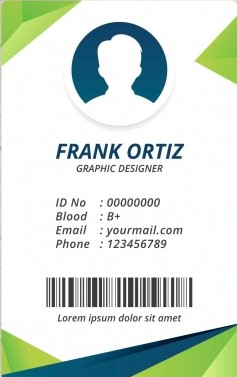

<!--
  Generated template for the PrintcardPage page.

  See http://ionicframework.com/docs/components/#navigation for more info on
  Ionic pages and navigation.
-->
<ion-header>
  <ion-navbar>
    <ion-title>บัตรประจำตัว</ion-title>
  </ion-navbar>
</ion-header>

<ion-content padding>
  <ion-title text-center>ตัวอย่างบัตร</ion-title>
  <br>
  <ion-col col-3 push-md-3>
  
</ion-col>
  <br>
  <button ion-button block color="secondary" >ปริ้นบัตร</button>

</ion-content>
